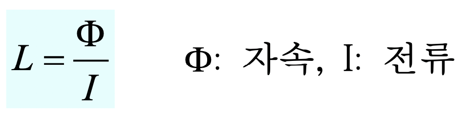
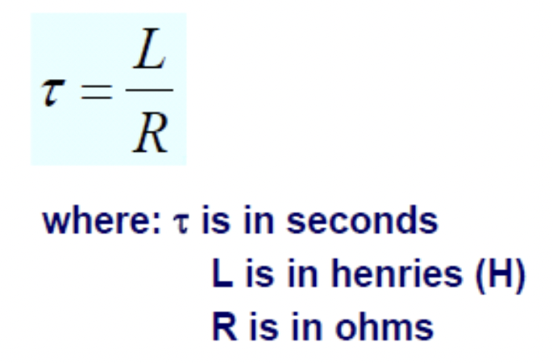

충남대학교 컴퓨터공학과 남병규 교수님의 "전자회로" 강의를 필기한 내용입니다.
이 문서는 보관이 목적이고, 관리되지 않습니다. 따라서 잘못된 정보가 포함되어 있거나 순서가 뒤죽박죽일 수 있습니다.
Inductor
- 한국어로 유도기라고 한다
- 전류를 자기장 형태로 저장하는 것
- 전자석처럼 코일형태를 띄고 있다
- 코일형태로 만들어서 자속(자기장)을 저장하는 것
- 기억 안나면 인덕션 생각해라 - 인덕션도 코일의 저항을 이용해 열을 발생시키므로 인덕터도 코일처럼 생겼으며 이 코일에 의한 자속으로 전류를 붙잡아두는 것
인덕터의 원리 - 렌츠의 법칙
- 자속이 전류를 흘러주게 하는 관성과 같은 역할을 해서 전류를 저장할 수 있게 한다
- 전류를 저장한다는 것은 전류를 유지킨다는 것을 의미한다
- 전압이 없어져도 자속이 어느정도 남아있으니까 자속이 없어질때까지는 전류가 흐른다는 뜻
- 자속이 전류의 관성과 같은 놈이므로 전류의 변화가 생기면 그에 대한 저항력을 발생시킨다(전류의 변화에 저항하는 힘을 유도한다고 해서 유도기)
- 저항이 줄어들어 전류가 커지면 다음과 같은 일이 일어난다
- 저항이 줄어들면 전류가 높아져야 되는데 이 순간 변화에 대항하기 위해 인덕터의 양단에 전류방향과 반대방향으로 전압이 걸린다
- 이러면 저항과 인덕터 간의 전위차가 줄어들어서 전류가 높아지지 않는다
- 하지만 결국에는 에너지를 점점 잃으면서 다시 반발력을 잃고 점점 전류가 증가하게 된다
- 그리고 반대의 경우로 저항이 높아져 전류가 작아지면 다음과 같은 일이 일어난다
- 저항을 높여버리면 전류가 줄어야 하는데 인덕터 입장에서는 관성을 유지하기 위해 전류의 방향과 같은 방향으로 전압이 걸린다
- 따라서 저항과 인덕타 간의 전위차가 커져 전류가 낮아지지 않는다
- 하지만 마찬가지로 점점 힘을 잃으며 전류가 점차 낮아지게 된다
- 이렇듯 인덕터를 달면 전류의 변화가 드라마틱하게 일어나지 않고 점진적으로 일어나게 된다
- 캐패시터랑 반대쥬? 인덕터는 전압의 불연속적인 변화는 가능하지만 전류의 불연속적인 변화는 불가능하다
- 이러한 전류흐름의 관성을 유지하려고 하는 것을 렌츠의 볍칙이라고 한다
Inductance 수학적으로 계산하기
- 인덕턴스(유도용량, L) - 전류의 변화에 저항하는 방향으로 전류를 발생시키는 능력 = 자속 저장 능력

인덕턴스 = 자속의 양 * 전류- 전류에 반비례하는 이유는 적은 전류에서는 자속이 추가되는게 더 쉽지만 전류가 큰 경우에는 이미 많은 자속이 들어있기 때문에 자속을 더 추가하는것이 더 힘들기 때문이다
- 단위는 H(Henry)이다
- 1H = 1초에 1A의 전류가 변할때 1V의 전압이 유도된다는것

유도전압(Vind) = 유도용량(L) * 전류변화속도(di/dt)

- 에너지(W)를 전류(I)를 이용해 저장한다
기하구조에 따른 용량

- 코일의 길이에 반비례
- 코일을 촘촘하게 감으면 자기장들이 중첩돼서 더 세어져 더 많은 전류를 저장할 수 있게 된다
- 따라서 코일에 사용된 도선의 길이가 같을 때 코일의 길이가 길어지면 그만큼 듬성듬성하게 감긴하는 뜻이므로 용량은 줄어들게 됨 - 용수철 길게 늘린거 생각하면 된다
- 코일단면적에 비례
- 코일 단면적이 늘어나면 더 많은 자속을 저장할 수 있으므로
- 권선수의 제곱에 비례 - 권선수는 코일을 감은 횟수를 의미함
- 코일을 많이 감으면 자속의 갯수 자체도 늘어나고 밀도도 늘어나므로 제곱에 비례하는 거랜다
- 투자율에 비례
- 투자율이라는 것은 코일 가운데에 들어있는 물질이 얼마나 잘 자화되는지의 수치이다
- 즉, 그냥 가운데 있는 물질이 뭐냐에 따라 달라지는 값 - 원자 주변도 전자가 돌기 때문에 이것도 하나의 원자 자석이 될 수 있는데 이것들이 얼마나 주변 자기장에 따라 잘 정렬되는지
- 정리하면 코일의 가운데에 들어가는 물질이 투자율이 좋아 잘 정렬되면 그만큼 자속이 방해받지 않는 것 이므로 용량도 늘어나게 된다
인덕터의 직렬, 병렬 연결
- 얘도 걸리는 전압 전류 계산하는 것은 KCL, KVL이용해서 구하면 된다
- 다만 직렬연결, 병렬연결시에 인덕턴스가 어떻게 변화하는지는 다음과 같다
직렬연결된 인덕터의 인덕턴스

- 같은 밀도로 코일을 더 감는것과 마찬가지 이므로 자속을 더 저장할 수 있어 인덕턴스가 늘어난다
병렬연결된 인덕터의 인덕턴스

- 얘는 의미론적으로 이해하기는 좀 어렵다
- 그냥 병렬 합성 저항처럼 인덕턴스를 계산해주면 된다
정리
- 인덕터의 합성 인덕턴스 계산은 저항의 합성 저항 구하는 것처럼 생각해주면 된다
- 즉, 직렬연결하면 인덕턴스도 늘어나고
- 병렬연결하면 인덕턴스도 줄어든다
정상, 과도상태
- 렌츠의 법칙에 따라 변화한다
- 충전될때는 전류의 방향에 반하는 방향으로 전압이 걸려 전류가 서서히 증가한다
- 단계적으로 알아보면
- 먼저 전압을 걸면 일단 인덕터에는 그에 반하는 힘이 바로 유도되어 반대방향으로 같은 전압이 유도된다
- 하지만 점차 힘을 잃으며 전압이 점차 낮아지다가
- 정상상태에 들어가면 유도전압이 0으로 떨어지게 된다
- 방전시에는 원래의 전류 방향으로 전압을 걸어 전류를 계속 흘려줘 전류가 서서히 감소한다
- 이것도 단계적으로 알아보면
- 일단 전압을 해제하면 인덕터에는 그에 반하는 힘이 바로 유도되어 같은방향으로 같은 전압이 유도된다
- 하지만 점차 힘을 잃으며 전압이 낮아지다가
- 유도전압이 0으로 떨어지면 그제서야 전류가 흐르지 않게 되는 것
- 따라서 인덕터는 dc를 흘리고 ac를 차단한다 - 인덕터는 변화를 싫어하므로 ac를 차단하게 된다
인덕터의 개방법
- 인덕터가 있을 때 회로를 급작스럽게 단선시켜버리면 인덕터에 반대의 전압이 걸리기 때문에 단선된 부분에 공기를 통해 전류가 흐르게 되어 스파크가 일어난다
- 이러한 위험한 상황을 피하기 위해서는 인덕터가 발생시키는 전압에 의한 전류를 흐를 수 있도록 백도어를 하나 만들어 주는게 중요하다
- 하나의 도선을 인덕터와 병렬적으로 연결한 다음 회로를 단선시키면 연결한 도선으로 전류가 흐르며 점차 방전되게 된다
충전, 방전시에의 수식적 해석

- 이 공식 외워놔라
- KVL에 의해 저항에 걸리는 전압과 인덕터에 유도된 전압을 더하면 원래의 전압이 됨
- 저
Ri(t)는R * I(t)로 옴의 법칙에 의해 저항에 걸린 전압과 같다 - 그 뒤에 L어쩌고는 위에서 나온
인덕턴스 * 전류변화 속도이므로 Vind즉, 유도전압을 의미하는 것을 알 수 있다
- 저
- 충전될 때에는 저 Vs에 전원의 전압을 넣어줘서 풀면 되는거고 방전될때는 Vs에 0을 넣어줘서 풀면 되는거다 - 방전될때는 전압이 걸리지 않으므로
- 풀어보면 충전시에는
I(t)가

- 방전시에는

RL 시정수

- RL 시정수는 전류가 얼마나 잘 변화하는지를 나타내는 상수이다
- 계산은
타우(t) = 자연발생 저항(R) / 자연발생 인덕턴스(L)로 한다 - RC 시정수와 마찬가지로 타우(t) 로 표기한다
- 이 시정수가 작으면 변화가 잘 일어나지 않고
- 크면 변화가 빠르게 일어난다
실제에서의 자연적인 요소
- 사실 인덕터는 회로에서 많이 마주치기가 힘들다 - 캐패시터와 마찬가지로 코일을 감지 않더라도 도선에서 인덕터가 자연적으로 발생하게 된다
- 하지만 아주 빠르게 변화하는 칩이거나 아주 사이즈가 큰 보드가 아니라면 이 인덕턴스는 잘 보이지 않는다
- 보통 전자회로를 만들때 자연적으로 발생하는 방해요소는 저항(R) 과 캐패시터(C) 두가지를 주로 고려하게 된다